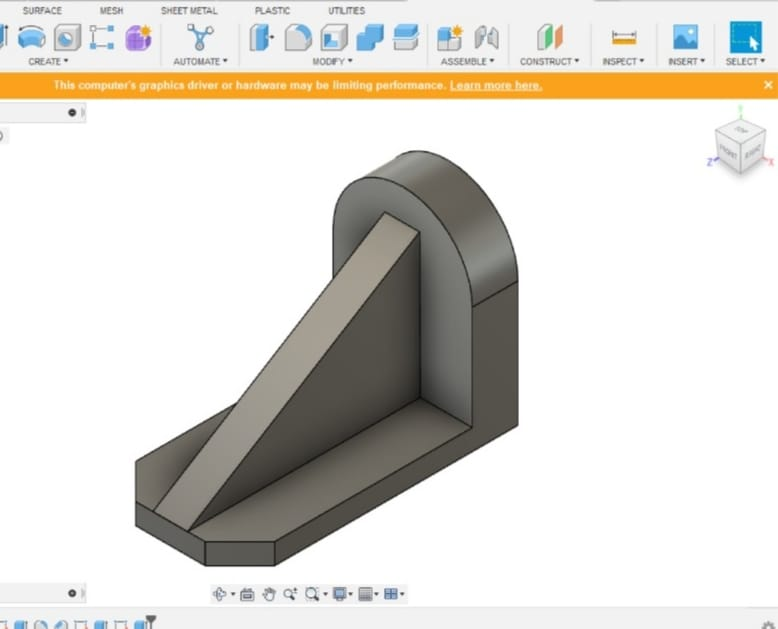
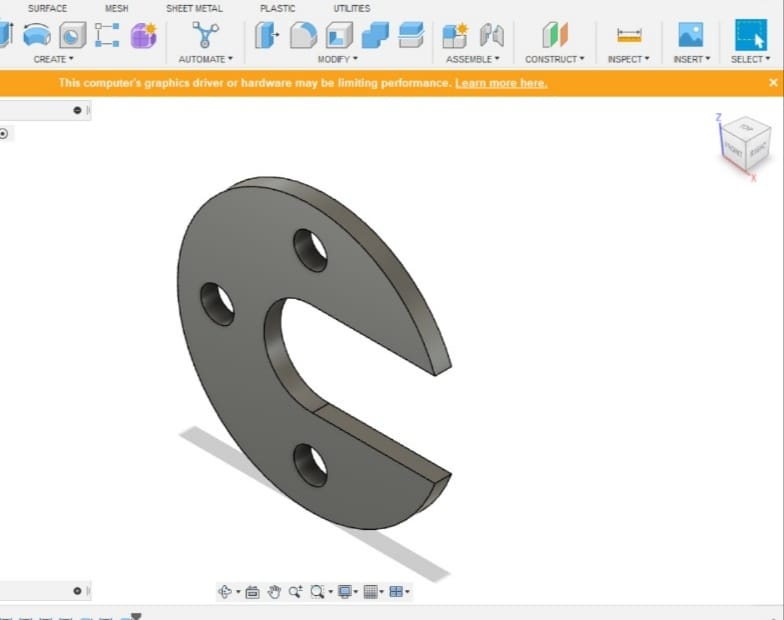
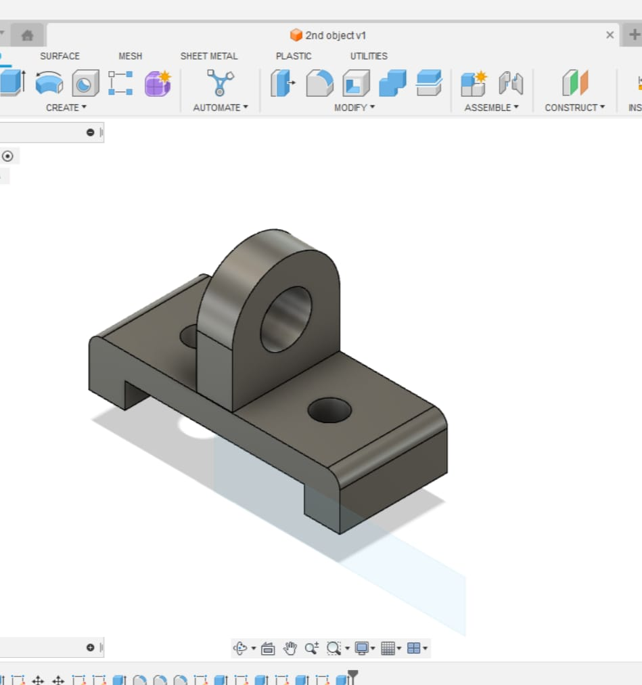

Computer Aided Design
Date: 4th Feb 2023 - 10th Feb 2023
Introduction:
As an enthusiastic member of the FabLab community at SSGMCE, I delved into various modules to expand my skill set. The second module, focusing on Computer-Aided Design (CAD), provided me with an in-depth understanding of engineering graphics and the tools to create intricate 2D and 3D models using software like Fusion 360 and AutoCAD.
Exploring CAD:
The CAD module was a captivating journey into the realm of design and engineering visualization. It commenced with an introduction to engineering graphics, teaching me the essential principles of technical drawing, orthographic projections, and dimensioning. These foundational concepts laid the groundwork for my ventures into digital design.
Software Proficiency:
The heart of the CAD module was mastering industry-standard software applications: Fusion 360 and AutoCAD.
Fusion 360:
Fusion 360 is a versatile software that seamlessly combines design, engineering, and manufacturing capabilities. It enables the creation of 2D sketches that can be extruded, revolved, and manipulated into 3D models. The parametric modeling approach in Fusion 360 empowers users to make changes to the design while maintaining associativity between components.
AutoCAD:
AutoCAD is a pioneering software used for 2D and 3D computer-aided design and drafting. It excels in creating precise technical drawings, architectural plans, and mechanical designs. With features like layers, blocks, and dimensions, AutoCAD streamlines the design process and facilitates accurate communication of design intent.
Creating 2D and 3D Models:
Equipped with newfound software skills, I embarked on the journey of creating 2D and 3D models. The process involved translating theoretical knowledge into practical applications. I began by sketching basic 2D shapes and progressed to designing more complex objects. This hands-on experience helped me comprehend the relationship between technical drawings and their digital counterparts.Here are some 3D models created by me on Fusion360:




Challenges and Growth:
During my exploration of CAD, I encountered challenges akin to any learning process. Perfecting the art of translating my ideas into digital models required patience and dedication. Learning the intricacies of Fusion 360 and AutoCAD, from sketching to rendering, involved trial and error. The process of visualizing objects in three dimensions and representing them accurately in 2D taught me precision and attention to detail.
Conclusion:
The Computer-Aided Design module at FabLab provided me with a profound insight into the world of engineering graphics and digital modeling. By mastering Fusion 360 and AutoCAD, I gained proficiency in transforming concepts into tangible designs. The ability to draft and visualize 2D and 3D models equips me with a valuable skill set applicable across various fields of engineering and design. As I progress in my FabLab journey, the CAD module's lessons and experiences will undoubtedly play a pivotal role. The understanding of engineering graphics and the skills gained in using powerful software will continue to shape my contributions to future projects within the FabLab community and beyond.
Expected Outcomes:
To become familier with the AutoCAD and Fusion360 user interface. Understand the fundamental concepts and features of AutoCAD and Fusion360. Use the precision drafting tools in AutoCAD to develop accurate technical drawings.